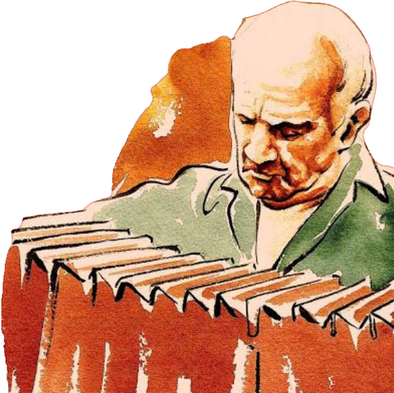
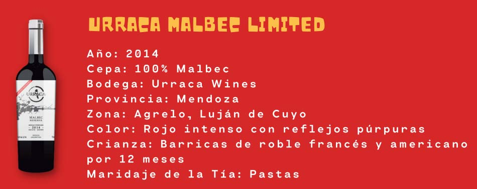
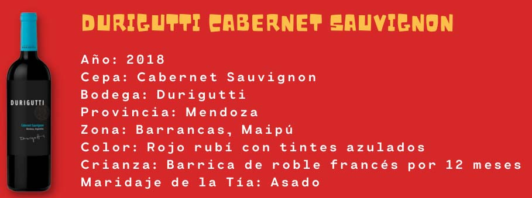
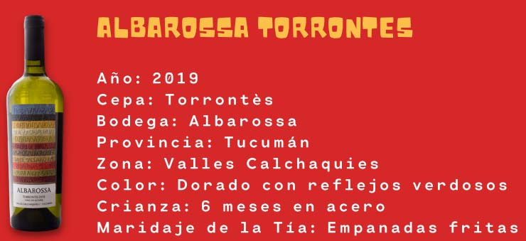
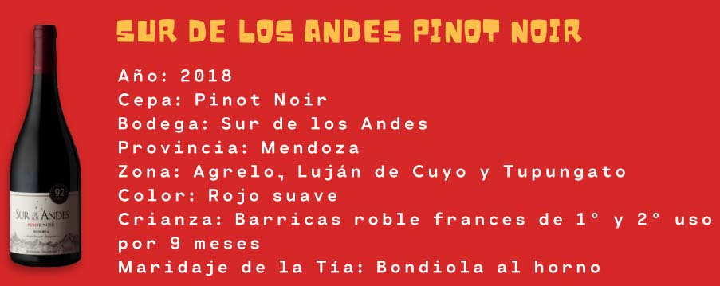
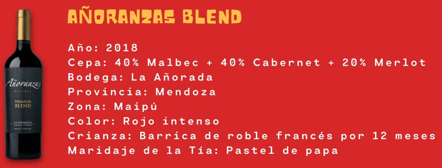
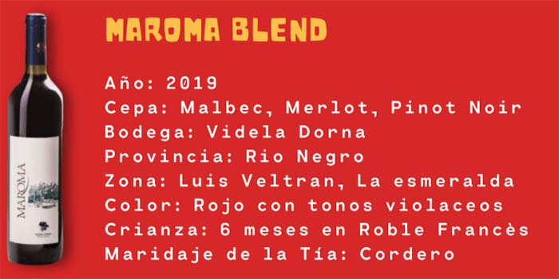

Cada mes homenajeamos a personalidades celebres.
Este mes queremos destacar al Astro del Tango
ASTOR PIAZZOLLA
Antes de Continuar, abrite un vino, dale play y vivi la experiencia

Vinos del Box






ASTOR PIAZZOLLA "La música es el arte mas directo, entra por el oído y va al corazón."
Compositor y bandoneonista. Fue uno de los artífices de la renovación del tango. Decarissimo, Milonga del
ángel,
La muerte del ángel, Invierno porteño, Buenos Aires hora cero, Balada para un loco y Adiós, Nonino son
algunos
de sus tangos más populares. En ellos conviven el género tradicional, la música clásica y el jazz y
entremezclan
sus lenguajes, técnicas y estilos, lo que les confiere un aspecto novedoso y de un considerable atractivo, a
pesar de lo cual despertaron el rechazo de los círculos tanguísticos más conservadores.
Hijo de un inmigrante italiano admirador de Gardel, Astor Piazzolla nació en Mar del Plata en 1921, pero de
pequeño marchó con sus padres a vivir a Nueva York En Nueva York conoció a Carlos Gardel, y surgió entre
ambos
una larga amistad que derivó incluso en la fugaz participación de Astor, como actor, en la película El día
que
me quieras, donde interpretaba a un canillita.
El prestigio de Piazzolla fue amplio en Europa, mientras que en Argentina se sucedieron las polémicas acerca
de
si lo suyo era o no tango, género que renovó a través de su instrumento (el bandoneón) y sus composiciones.
En
cualquier caso, la influencia de Astor Piazzolla y de la nueva estética musical que supo imponer en el tango
marcó de forma insoslayable a las generaciones más jóvenes de artistas inclinados hacia la música popular de
Buenos Aires. Así, por ejemplo, el bandoneonista y compositor Eduardo Rovira, que se apartó de los cánones
tradicionales del tango y fundó la Agrupación de Tango Moderno en 1960. Otro destacado músico, Rodolfo
Mederos,
es seguramente el más destacado seguidor de Astor Piazzolla como bandoneonista. Los mas tradicionalistas del
tango lo llamarían “el asesino del tango”; a él no le preocupó y demostró que se podía mantener vivo el
tango
desde los jóvenes y las nuevas experimentaciones musicales. Por eso es que para nosotros Astor es “El Astro
del
Tango” …